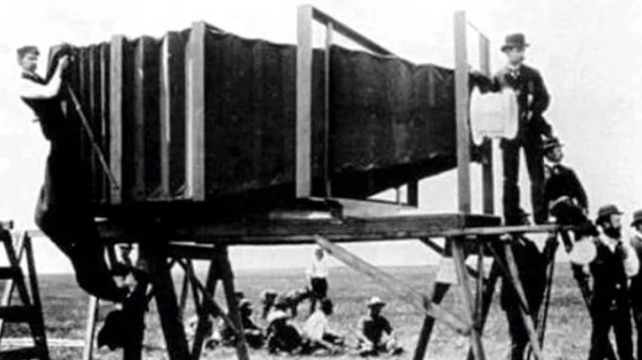

CS1102 - Exploring Digital Camera - 2023/2024 Semester B
Chan Yat Long Justin 57141680,Yeung Sum Yi 57838077,Chak Man Yin Hilda 57839283,Chang Cho Wun 57841475
Digital cameras use its electronic image sensor converting light into digital data, which is then being processed and saved on a memory card. You can review the results immediately, transfer the data to other devices, and utilize a wide range of functions such as adjusting resolution, zooming, and shooting settings. In daily life, one of the most common devices included digital cameras that we must have is smart phones, which keeps cameras updating their image quality and manual features for people to capture every memorable moment in their lives.
How does a camera works?
After the user presses the flash button, the electronic sensor inside the camera receives light coming through the camera lens. It then transforms the light into electrical signals. The image processor then analyzes and changes all signals into digital data and saved in a memory card or internal memory. Users can control different settings such as exposure, focus, adding filters to achieve the result they desired.
Background of Digital Camera Development
Photography has undoubtedly been transformed by digital cameras. In 1975, Kodak stunned the world by debuting the first digital camera. Weighing around 3.6kg, it took 23 seconds to take a low-resolution picture. Just imagine your entire family posing and smiling for such an extended period of time; it must have been a difficult job!

Fast forward to today, cameras have significantly improved in terms of speed, resolution, low-light performance, connectivity, and other areas. Digital cameras are essential in many fields these days, especially for journalists who depend on them to take high-resolution images in real-time so stories can be reported quickly, scientists who capture objects in astronomy and record seconds or days of details for their studies.
As we dig deeper into the topic, we will explore the architecture of independent and dependent cameras, highlighting their merits and demerits, as well as their application in various industries of the economy.
Are you prepared for this amazing adventure? Click the button!
Architecture of Digital Camera
Lens
Camera lens are optical parts that allow light to focus onto the image sensor through bending and refracting the light, which is how a camera captures a photo. The quality and type of the lens determines the clarity, sharpness of the image. The different types of lens differs by its focal length and apertures for different type of photos with different ranges. The basic types of lens are prime and zoom lens which includes types of macro lens, telephone lens, wide angle lens, standard lens and speciality lens. Its variance in view allows photographer to take different styles of photos like wide angle lens for landscape, macro lens to zoom into very details and the so.
Shutter
The shutter controls the time that the lens is exposed to light. The time of light exposure are determined by the light condition around, movement of the object and the so.Better camera can have better precision in controlling how frequent the shutter moves. The usual type of shutter includes either the leaf shutter or the focal-plane shutter. Their differences is the position that they are in, the leaf shutter is usually between or just behind the lens while the latter one is in front of the lens. These shutters are either mechanic or electronical, where mechanical ones are more professional and the latter are usually used in cheaper digital cameras.
Image Sensor
Image Sensor comes in various of types but ultimately it comes down to its ability of converting the light received through the lens into electrical signals that can be captured and understood. The variety of types comes from the nonstop improvement in the device’s details like components like size, resolution, speed and the so, Back to the types of image sensor, it could be differentiate into structure types, chroma types or shutter.
Viewfinder
The viewfinder is the eyepiece that photographers look through to see what they are capturing, which usually divides in two types which are Pentaprisms and Pentamirrors. Their differences in its professionalism. Pentaprisms are premium versions where the material involved is usually glass while the latter used plastic which differs in price. As for the working mechanism, either types can be optical or electronic basing on what the camera is, professional uses electronic most of the times.